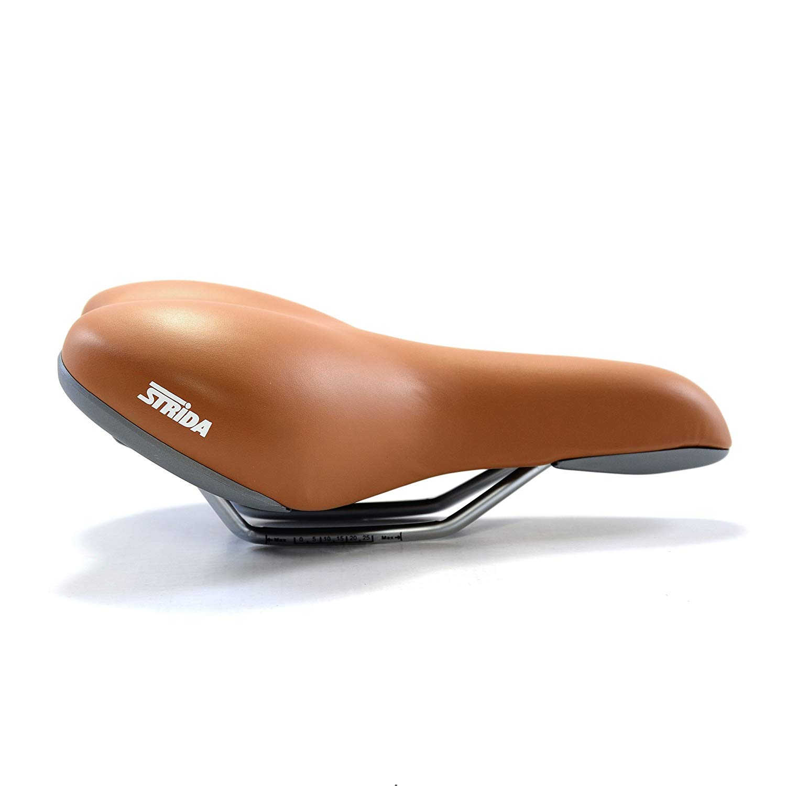

STRIDA: FOLDABLE SINCE 1984 ®
User friendly, easily wheeled while it’s folded. You can PUSH it! Opens and folds in less than 10 seconds without any tool. Clean, grease free (belt drive). No oily chain or gears. Your trousers stay pristine. Real cool appearance (The only folding bike in the industry that doesn’t make you look like a “granola type” )
-
THE WHEEL
The STRiDA 18 x 1.25 wire bead reflective tire is a smooth treaded tire with a reflective stripe, making it an ideal commuter tire to pair with folding bicycles.
-
THE CARRIER
The STRiDA Alloy Pannier Carrier Rack will make your STRiDA Folding Bicycle truly your own! This rack adds much needed storage for your daily commute or weekend ride.
-

THE SADDLE
The saddle Brown all mo is a replacement part for your STRiDA bicycle. STRiDA premium accessories are the best products to individualize your STRiDA and get the best performance out of the worlds most unique folding bicycle.
Strida LT - 16" Wheels/Single Speed®
2449 $
User friendly, easily wheeled while it’s folded. You can PUSH it! Opens and folds in less than 10 seconds without any tool. Clean, grease free (belt drive). No oily chain or gears. Your trousers stay pristine. Real cool appearance (The only folding bike in the industry that doesn’t make you look like a “granola type” )
-
THE GOOD
The first completely new bicycle geometry in 95 years. Inside a triangular frame of lightweight aluminum, power is transferred to the rear wheel via a silent clean Kevlar belt.
-
THE SPECS
Single speed with a weight of only 22 lbs. Rustproof frame and cable disc brakes Kevlar greaseless belt
-
THE UPDATES
Handlebars are mounted horizontally so the rider can sit comfortably upright with an excellent view of the road. The genius of the triangular frame is that it can quickly fold.
STRiDA EVO 2018®
1299 $
The latest innovation of STRiDA EVO to install the 3 speed gear system into the BB parts, simply shift the gears by pedaling backward withoutt adding any shifter or cable, every design detail expresses that STRiDA is more than a folding bike but a moving art!
-
THE GOOD
User friendly, Easily wheeled while it’s folded. You can PUSH it! Opens and folds in less than 10 seconds without any tool. Clean, grease free (belt drive). No oily chain or gears.
-
THE SPECS
Wheels: 16 alloy wheel. Large Tooth Plate: Large steel plate. Rear Flywheel: Broken tooth Aluminum flywheel. GearRatio: 100/30 Drive Train: STRIDA special belt drive(up to 50,000 miles)
-

THE UPDATES
5.1 is an upgrade version from 5.0. The new feature is an embedded kick-stand. Frame: 7000 series aluminum | Hand Grip: Ergonomic grip | Brakes: Disc brakes. Rear Carrier: Aluminum alloy.